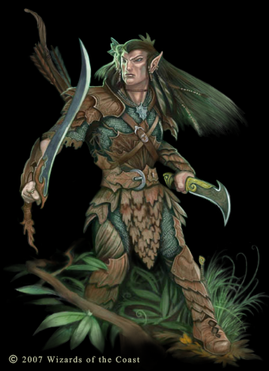

|
|
|
ELF |
| |
 |
엘프(Elf) - Graceful and Smart, Protector of Nature
엘프는 시, 노래, 춤, 학문과 마법 기술로 유명하다.
자연적이고 단순한 아름다움을 좋아하며 그들의 숲이 위협을 받는다면
상당히 전투적인 모습을 보여준다.
재물욕보다 지식욕이 더욱 강하며 수명이 길기 때문에
사물과 사건을 보는 관점이 넓고 사소한 일에 동요하지 않는다.
자유와 다양성을 사랑하기 때문에 가치관은 혼돈(chaos)를 지향하는 경향이 있으며 친구든 적이든
만드는 것이 느리고 그들을 잊는 것은 더욱 느리다.
그들은 작고 가냘프다. 그리고 아름답지만 허약하며 우아하고
기품이 있지만 다소 거만하다. 몸에 잔털이나 수염이 없는 것이 특징이고
단순하고 편한 의상을 좋아하며 특히 부드러운 청색과 녹색을 좋아한다.
110세를 전후해서 성인기를 거치고 700년 이상을 산다.
잠을 자지 않는 것 또한 엘프들의 특징인데 대신 명상을 통해서
휴식을 취한다. 하루에 4시간의 명상을 통해 쉬는데 이것은 인간이 8시간동안
잠을 잔 것과 동일한 효과를 가진다.
그들은 이 명상을 '트랜스(trance)'라 부른다.
그들의 거주지는 숲속에 있으며 잘 숨겨져 있고 또 숲과
자연스러운 조화를 이룬다. 그들의 생활 또한 자연에 거의 해가 되지 않는다.
(인간들이 자연을 파괴하는 것과 아주 대조적이다.)
엘프들은 인간은 다소 천하다고 여기고 놈(Gnome)은 하찮게 여기며
드워프는 정말 재미없는 무리라 여기고 하플링은 진부하다 여긴다.
그리고 하프엘프(그들 입장에선 하프휴먼이지만)는 불쌍한 무리라
여기고 하프오크는 무자비한 괴한이라 여긴다.
그러나 거만한 구석이 있다 하더라도 드워프나 놈처럼 까다롭게
굴지는 않으며 대부분은 명량하고 친절한 모습을 보여준다.
타지에서의 엘프는 음유시인, 예술가, 현자로 주로 활동을 하며
귀족들은 검술이 뛰어난 엘프를 검술지도자로 모셔가려고 경쟁을 한다.
스탯 (스탯만 놓고 보면 그야말로 축캐. 전 클래스 중 최강)
| |
1p |
2p |
| 영문판 이름 |
Lucia |
Kayla |
| 일본판 이름 |
ルシア(루시아) |
ケイラ(케이라) |
| 초기레벨 |
8 |
나이 |
101 |
| Strength |
7 |
Dexterity |
15 |
| Constitution |
8 |
Intelligence |
15 |
| Wizdom |
13 |
Charisma |
14 |
|
|
| |
게임에서의 특징
무기와 마법을 동시에 사용하기 때문에 여러가지 상황에 대처하기가 용이하며 다방면에 걸쳐서 뛰어난
능력을 보여줍니다. 그러나 무기사용은 파이터보다 뒤쳐지며 마법은 매직 유저보다 뒤쳐지기 때문에
어정쩡한 면도 있으며 가장 낮은 HP와 낮은 방어력은 조금 부담이 됩니다.
- 양손무기와 스태프류와 완드류를 제외한 모든 무기의 사용이 가능합니다.
- 최대 10레벨까지 오릅니다. 따라서 매직 유저에 비해 주문의 종류와 횟수가 적으며 데미지도 좀 낮습니다.
- 화살을 무한대로 보유하고 있으며 공중에서도 쏠 수 있습니다.
그리고 은화살/불화살을 공중에서 사용시 갯수가 줄어들지 않습니다.
- 구울의 공격에 마비되지 않으며 괴물들의 문자를 읽을 수 있습니다.
- 시프나 매직유저를 제외하면 방어력이 가장 약하기 때문에 적이나 트랩으로 부터 많은 데미지를 입습니다.
- 기본HP가 적은 데다가 레벨상승으로 얻는 HP도 적어서 HP보유상황이 가장 안좋습니다.
- 힘이 약해서 상자를 들거나 장애물을 미는 속도가 느립니다.
- 쓰로잉 해머의 투척속도가 드워프를 제외하면 가장 느리며 오일류의 투척속도도 조금 느립니다.
- 기본 무기인 숏소드의 레벨이 처음부터 2레벨이고 타 클래스보다(드워프제외) 이른 시점에 4레벨에 도달하기 때문에
건틀릿이나 브레슬릿이 없어도 데미지가 제법 강합니다. 그러나 리치가 많이 짧은 것이 약점입니다.
- 화살이 무한이라서 언제든지 화살로 득점이 가능하기 때문에 스코어 어택에 유리한 점이 있습니다.
이름과 타입
보통은 워 머신과 맨 스콜피온에게 라이트닝 볼트 크리티컬을 노리기 위해 타입 H (이어링)을 선택합니다.
그러나 다크 워리어1 코스로 간다면 타입 G (건틀릿)을 선택 하는 것도 좋습니다.
기본 무기와 초기 레벨/HP, 보유 아이템, 주문량
- 기본 무기 :  숏 소드(short sword) * 처음부터 무기 레벨이 2입니다. 숏 소드(short sword) * 처음부터 무기 레벨이 2입니다.
- 초기 레벨/HP(단위:픽셀) : 8/96
- 초기 보유 아이템 :  x ∞ x ∞  x 2 x 2  x 2 x 2  x 2 x 2
(화살은 팔거나 없앨 수 없으므로 실질적으로 활용 가능한 아이템 칸은 5칸입니다.)
- 초기 주문량 : 1레벨 x 4 , 2레벨 x 3 , 3레벨 x 2 , 4레벨 x 2
레벨과 HP, 습득주문, 주문의 양, 주문의 회복 시점
레벨업 시점/
주문 회복 시점
(클리어 후) |
다크 워리어1
맨 스콜피온 |
오우거
비홀더
그린 드래곤 |
디스플레이서
비스트 |
레드 드래곤 |
에저홀덴 |
나그파 |
| 레벨 |
9 |
10 |
주문 회복 |
주문 회복 |
주문 회복 |
주문 회복 |
| HP |
104 |
112 |
- |
- |
- |
- |
| 무기 레벨 |
3 |
4 |
- |
- |
- |
- |
| 습득 주문 |
- |
Conjure
Elemental |
- |
- |
- |
- |
주문의 양
(레벨/양) |
1 / 4
2 / 4
3 / 3
4 / 2
5 / 0 |
1 / 5
2 / 4
3 / 3
4 / 2
5 / 1 |
- |
- |
- |
- |
- 원작의 메모라이징 대신 레벨업과 동시에 주문횟수가 회복됩니다.
- 드워프 지하 동굴로 진행을 해서 텔 엘레론을 살려뒀을 경우 나그파 클리어 후 주문 회복이 안됩니다. |
| |
*추가 정보 - 새로 컨티뉴 했을 때의 기본 보유 아이템 (화살을 제외한 나머지)
| 스테이지4(하피) |
: 단검 x 3, 버닝 오일 x 3, 쓰로잉 해머 x 3, 은화살 x 2 |
| 스테이지6(맨티코어) |
: 은단검 x 3, LB 오일 x 3, 쓰로잉 해머 x 4, 은화살 x 4 |
|
|
| |
| go to Top |
| 2007 Crassus & legon. All rights reserved. |
|